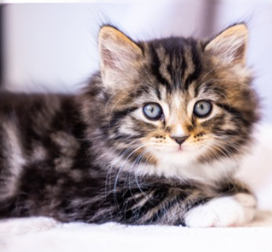

Wolves
information: Wolves are large carnivores native to eurasia and north america. they live in packs of 6-10 but most common a pack is 7 wolves, wolves mainly hunt hoofed animals like deer,elk and so on wolves give birth to around 1-10 pups but most common are 4-7, they also only give birth to one litter of pups in ther life time and then the pups stay with the pack untill ther about 10-54 months old. A normal pack is made up of two adult and juveniles and yearlings, ther have been packs made of two to four family group

Cats
information: In the begining cats started of as house/farm pets back in ancient egypt and they even got statues made of them and carvings made of them, Cats have a basic instinct to hunt small animals like vermine and with ther agility they are perfect for keeping houses and farms clean from pest animals like rats,molles,mice, for normal animals cats will eat anything they can catch. Cats have be come so populare that we have 100 or so diffrent breeds of cats in the world.
Spinosaurus
infromation: Spinosaurus was one of the wierdest myserys in arcyology sicne the first ever scelaton was destroyd in world war 2 and we still dont know if ther is a full scelaton of the animal, in the last years spino has lost alot of its size as new theorys come out atm its basicly a crocodillian just with a big sail on its back a 14 meters long body and about 7.4 metric tons of waight, spino was a semiaquatic creature, Its main diet was fish and scientists think it also would go for any terrestrial dino or creatures it could catch.

Arctic foxes
information: Arctic foxes or snow fox or polar fox they have alot of names, ther well adapted for living in the cold with its thick warm fur that also works as camflage in the snow, ther around 46-68 cm long and can live up to 11 years but most dont last more then 1 year, ther main diet is small animals like seal pups, waterbirds, lemmings and voles.

Snow leopards
information: Snow leopards are large cats in the family phanters they live in central and south asia in hige mounten alpine and subalpine area at 3 000-4 000m in elevation, snow leopards are a sister grupp to tigers split about 3.7-2.7 milion years ago in that time that group evolved to live and hunt in the mountens with ther white fur and grey spots on the head that turn into black rossettes along the body and ending in a bushy tail for balance with ther small ears they dont lose heat and big pawns to help them distribute waight over a biger area, ther mostly active dawn to early morning then again afternoon to early evenings,